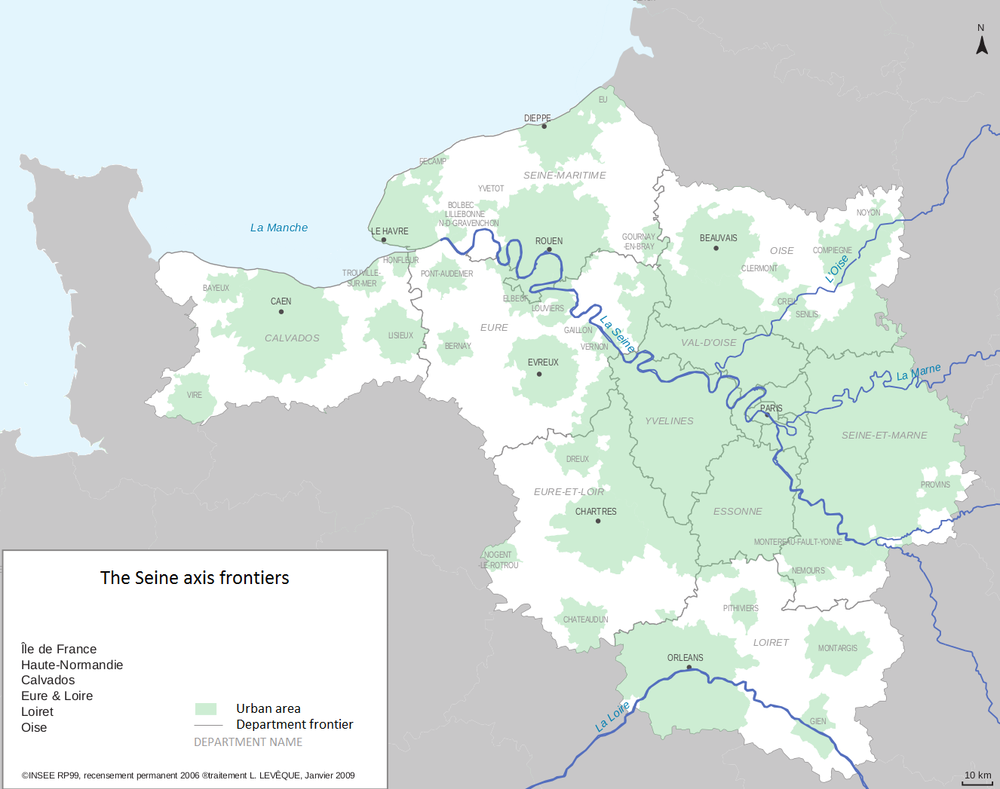
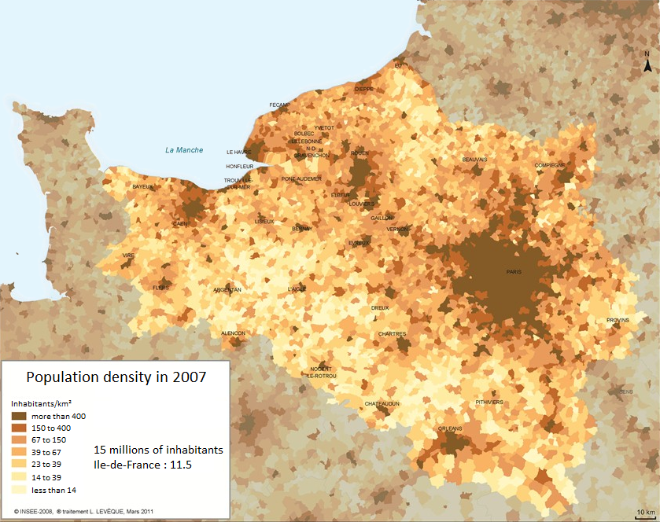

A little bit of context
A work of thesis from a collaboration between :
- The members of the Devport project who want to model ports organisations and their hinterland.
- And the LITIS whose his RI²C team (Réseaux d'Interaction et Intelligence Collective) works on complex system and on dynamic interaction networks.
What is the Seine Axis?
It is a geographical space...

Figure 1 : The Seine axis frontiers
What is the Seine Axis?
...with a huge population whose inhabitants consume goods.

Figure 2 : The population density of the Seine axis in 2007
What do we want to do?
We want to model how the goods are carried from providers to these consumers thanks to actors of logistic who must organise themselves.
What is the matter?
- At a micro level : we observe numerous and heterogeneous actors strongly interacting with each others. They organise themselves in order to build many uniques supply chains.
- At a macro level : there is an overall pattern where goods come from foreign providers and go through the Seine axis to urban areas (mainly through Le Havre and to Paris' region).
- But we can't understand the overall process only with the study of the auto-organisation of the micro level.
It is a complex system !
What will we do?
We want to use tools from the complex system theory in order to model this environment.
- Individual centred based models : multi agent systems.
- Graph theory : dynamic networks and analysis tools.
Overview
- The Seine axis logistics.
- Agents and graphs
- Conceptual Model
- The Simulation
- The First Results